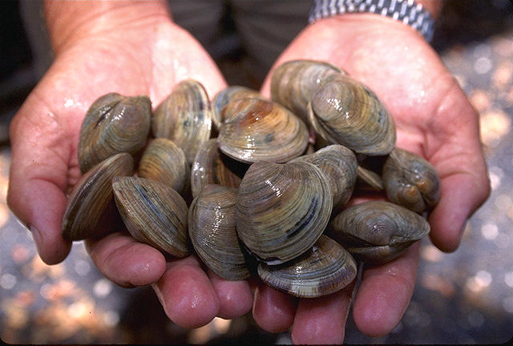

Most popular seafood
Top 8 popular seafood are Shrimp, Salmon, Tuna, Pangasius or Basa, COD, Catfish, Crab and Clams.
01 Shrimp
Shrimp are crustaceans with elongated bodies and a primarily swimming mode of locomotion. Shrimp are swimming
crustaceans with long narrow muscular abdomens and long antennae.
02 Salmon
 Salmon is the common name for several commercially important species of euryhaline ray-finned fish from the
family Salmonidae, which are native to tributaries of the North Atlantic and North Pacific basin. Other
closely related fish in the same family include trout, char, grayling, whitefish, lenok and taimen.
Salmon are typically anadromous: they hatch in the gravel beds of shallow fresh water streams, migrate to
the ocean as adults and live like sea fish, then return to fresh water to reproduce. However, populations
of several species are restricted to fresh water throughout their lives. Folklore has it that the fish
return to the exact spot where they hatched to spawn, and tracking studies have shown this to be mostly
true. A portion of a returning salmon run may stray and spawn in different freshwater systems; the percent
of straying depends on the species of salmon. Homing behavior has been shown to depend on olfactory memory.
Salmon is the common name for several commercially important species of euryhaline ray-finned fish from the
family Salmonidae, which are native to tributaries of the North Atlantic and North Pacific basin. Other
closely related fish in the same family include trout, char, grayling, whitefish, lenok and taimen.
Salmon are typically anadromous: they hatch in the gravel beds of shallow fresh water streams, migrate to
the ocean as adults and live like sea fish, then return to fresh water to reproduce. However, populations
of several species are restricted to fresh water throughout their lives. Folklore has it that the fish
return to the exact spot where they hatched to spawn, and tracking studies have shown this to be mostly
true. A portion of a returning salmon run may stray and spawn in different freshwater systems; the percent
of straying depends on the species of salmon. Homing behavior has been shown to depend on olfactory memory.
03 Tuna
A tuna is a saltwater fish that belongs to the tribe Thunnini, a subgrouping of the Scombridae (mackerel)
family. The Thunnini comprise 15 species across five genera, the sizes of which vary greatly, ranging
from the bullet tuna (max length: 50 cm or 1.6 ft, weight: 1.8 kg or 4 lb) up to the Atlantic bluefin tuna
(max length: 4.6 m or 15 ft, weight: 684 kg or 1,508 lb), which averages 2 m (6.6 ft) and is believed to
live up to 50 years.
Tuna, opah and mackerel sharks are the only species of fish that can maintain a body temperature higher
than that of the surrounding water. An active and agile predator, the tuna has a sleek, streamlined body,
and is among the fastest-swimming pelagic fish – the yellowfin tuna, for example, is capable of speeds of
up to 75 km/h (47 mph). Greatly inflated speeds can be found in early scientific reports and are still
widely reported in the popular literature.
Found in warm seas, the tuna is commercially fished extensively as a food fish, and is popular as a
bluewater game fish. As a result of overfishing, some tuna species, such as the southern bluefin tuna, are
threatened with extinction.
04 Pangasius or Basa
 Pangasius is a genus of medium-large to very large shark catfishes native to fresh water in South and
Southeast Asia. The term "pangasius" is sometimes used to specifically refer to the commercially important
basa fish, P. bocourti.
Pangasius is a genus of medium-large to very large shark catfishes native to fresh water in South and
Southeast Asia. The term "pangasius" is sometimes used to specifically refer to the commercially important
basa fish, P. bocourti.
05 COD
 Cod is the common name for the demersal fish genus Gadus, belonging to the family Gadidae. Cod is also used
as part of the common name for a number of other fish species, and one species that belongs to genus Gadus
is commonly not called cod (Alaska pollock, Gadus chalcogrammus).
The two most common species of cod are the Atlantic cod (Gadus morhua), which lives in the colder waters and
deeper sea regions throughout the North Atlantic, and the Pacific cod (Gadus macrocephalus), found in both
eastern and western regions of the northern Pacific. Gadus morhua was named by Linnaeus in 1758. (However,
G. morhua callarias, a low-salinity, nonmigratory race restricted to parts of the Baltic, was originally
described as Gadus callarias by Linnaeus.)
Cod is popular as a food with a mild flavour and a dense, flaky, white flesh. Cod livers are processed to
make cod liver oil, a common source of vitamin A, vitamin D, vitamin E, and omega-3 fatty acids (EPA and DHA).
Young Atlantic cod or haddock prepared in strips for cooking is called scrod. In the United Kingdom, Atlantic
cod is one of the most common ingredients in fish and chips, along with haddock and plaice.
Cod is the common name for the demersal fish genus Gadus, belonging to the family Gadidae. Cod is also used
as part of the common name for a number of other fish species, and one species that belongs to genus Gadus
is commonly not called cod (Alaska pollock, Gadus chalcogrammus).
The two most common species of cod are the Atlantic cod (Gadus morhua), which lives in the colder waters and
deeper sea regions throughout the North Atlantic, and the Pacific cod (Gadus macrocephalus), found in both
eastern and western regions of the northern Pacific. Gadus morhua was named by Linnaeus in 1758. (However,
G. morhua callarias, a low-salinity, nonmigratory race restricted to parts of the Baltic, was originally
described as Gadus callarias by Linnaeus.)
Cod is popular as a food with a mild flavour and a dense, flaky, white flesh. Cod livers are processed to
make cod liver oil, a common source of vitamin A, vitamin D, vitamin E, and omega-3 fatty acids (EPA and DHA).
Young Atlantic cod or haddock prepared in strips for cooking is called scrod. In the United Kingdom, Atlantic
cod is one of the most common ingredients in fish and chips, along with haddock and plaice.
06 Catfish
 Catfish are a diverse group of ray-finned fish. Named for their prominent barbels, which resemble a cat's
whiskers, catfish range in size and behavior from the three largest species alive, the Mekong giant catfish
from Southeast Asia, the wels catfish of Eurasia, and the piraíba of South America, to detritivores (species
that eat dead material on the bottom), and even to a tiny parasitic species commonly called the candiru,
Vandellia cirrhosa. Neither the armour-plated types nor the naked types have scales. Despite their name, not
all catfish have prominent barbels or "whiskers". Members of the Siluriformes order are defined by features
of the skull and swimbladder. Catfish are of considerable commercial importance; many of the larger species
are farmed or fished for food. Many of the smaller species, particularly the genus Corydoras, are important
in the aquarium hobby. Many catfish are nocturnal, but others (many Auchenipteridae) are crepuscular or
diurnal (most Loricariidae or Callichthyidae, for example).
Catfish are a diverse group of ray-finned fish. Named for their prominent barbels, which resemble a cat's
whiskers, catfish range in size and behavior from the three largest species alive, the Mekong giant catfish
from Southeast Asia, the wels catfish of Eurasia, and the piraíba of South America, to detritivores (species
that eat dead material on the bottom), and even to a tiny parasitic species commonly called the candiru,
Vandellia cirrhosa. Neither the armour-plated types nor the naked types have scales. Despite their name, not
all catfish have prominent barbels or "whiskers". Members of the Siluriformes order are defined by features
of the skull and swimbladder. Catfish are of considerable commercial importance; many of the larger species
are farmed or fished for food. Many of the smaller species, particularly the genus Corydoras, are important
in the aquarium hobby. Many catfish are nocturnal, but others (many Auchenipteridae) are crepuscular or
diurnal (most Loricariidae or Callichthyidae, for example).
07 Crab
Crabs are decapod crustaceans of the infraorder Brachyura, which typically have a very short projecting "tail"
(abdomen), usually hidden entirely under the thorax. They live in all the world's oceans, in freshwater, and
on land, are generally covered with a thick exoskeleton, and have a single pair of pincers. They first appeared
during the Jurassic Period.
08 Clams

Clam is a common name for several kinds of bivalve molluscs. The word is often applied only to those that are
edible and live as infauna, spending most of their lives halfway buried in the sand of the seafloor or
riverbeds. Clams have two shells of equal size connected by two adductor muscles and have a powerful burrowing
foot. They live in both freshwater and marine environments; in salt water they prefer to burrow down into the mud
and the turbidity of the water required varies with species and location; the greatest diversity of these is
in North America.
Clams in the culinary sense do not live attached to a substrate (whereas oysters and mussels do) and do not live
near the bottom (whereas scallops do). In culinary usage, clams are commonly eaten marine bivalves, as in clam
digging and the resulting soup, clam chowder. Many edible clams such as palourde clams are ovoid or triangular;
however, razor clams have an elongated parallel-sided shell, suggesting an old-fashioned straight razor.
Some clams have life cycles of only one year, while at least one has been aged to over 500 years old. All clams
have two calcareous shells or valves joined near a hinge with a flexible ligament and all are filter feeders.
Contact Me
You can contact me by email or phone
By Email :
dmathews0101@gmail.com
By Phone :
+91 9436835496